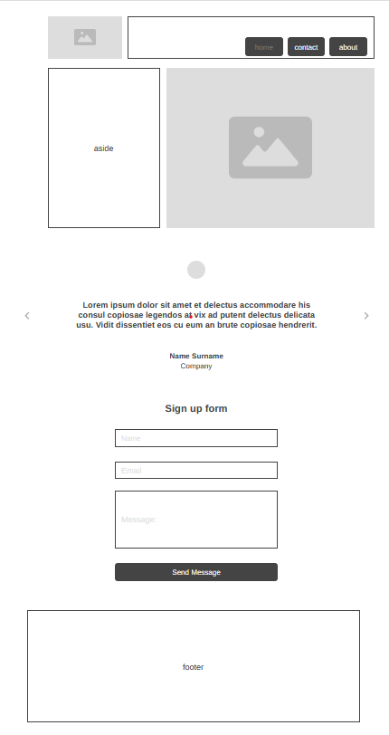
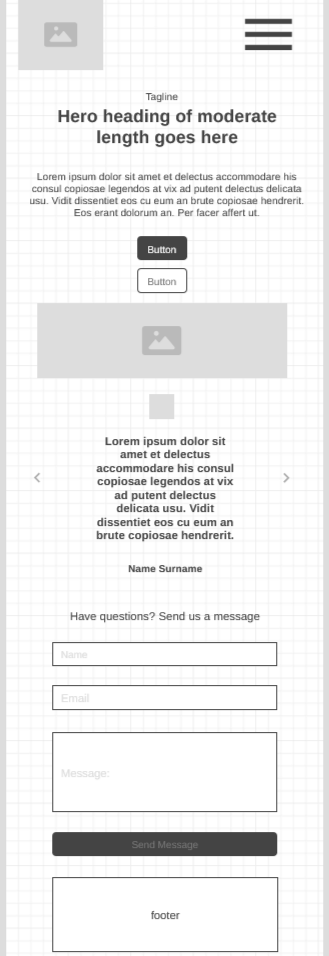

Site Name: NutriSync
NutriSync is a web application that provides personalized meal prep plans based on user input. Users can enter their age, weight, gender and they can choose from the three options available wether to loose weight, increase muscle mass or a healthy diet to control glucose levels, the user will receive a customized weekly meal plan with nutritional data tailored to their needs.
Site Purpose: Personalized Meal Prep Plans
NutriSync aims to help users achieve their health goals by providing them with meal plans that are tailored to their specific needs. By taking into account factors such as age, weight, and gender, NutriSync can create meal plans that are optimized for each individual user. The site also provides nutritional data for each meal, allowing users to make informed decisions about their diet.
Scenarios
Scenario 1: What is the best way to lose weight?
A user who wants to lose weight can input their age, weight, and gender into the NutriSync application. Based on this information, the application will generate a customized meal plan that is designed to help the user achieve their weight loss goals.
Scenario 2: How can I increase muscle mass?
A user who wants to increase muscle mass can input their age, weight, and gender into the NutriSync application. Based on this information, the application will generate a customized meal plan that is designed to help the user achieve their muscle gain goals.
Scenario 3: How can I control my glucose levels?
A user who has the need to control their glucose levels can input their age, weight and gender into the NutriSync application. Based on this information, the application will generate a customized meal plan that is designed to help the user achieve their glucose control goals.
Color Scheme
Main color: #0288D1
Secondary color: #E65100
Accent color: #333333
Typography
The primary font used in NutriSync is Roboto, which is a clean and modern sans-serif font. It is used for headings, body text, and other textual elements throughout the site. The font is easy to read and provides a professional look and feel to the application.
Wireframe

